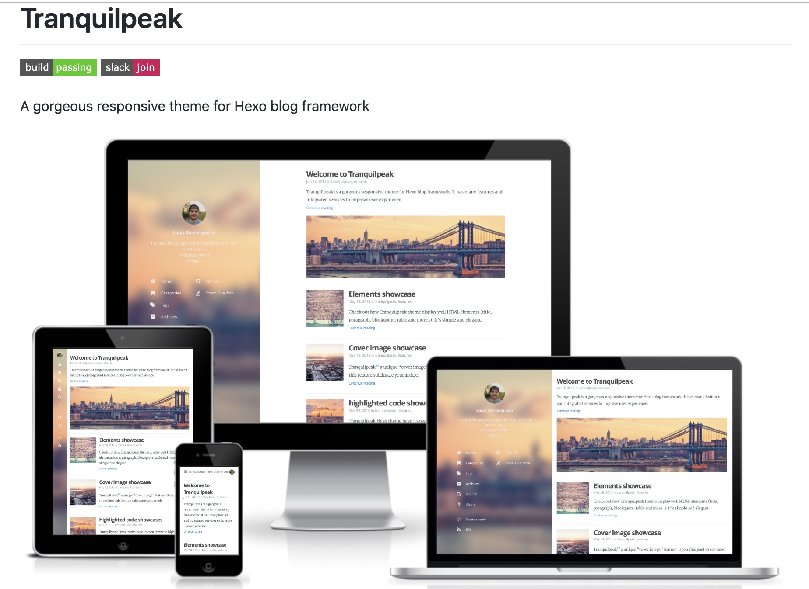

超简单! 教你从零用Hexo和Github搭建个人博客
前言
Hexo是高效的静态站点生成框架，它基于Node.js搭建博客，并可以托管于github服务器上。
之后便可以用markdown语法进行你的博客记录了。
生成上传命令行简便快捷，值得推荐！
准备工作
1. 下载node.js
点击下载安装Node.js
无特殊要求可以一路默认点击Next直到安装完成。
2. 安装Git
点击下载Git
以上两步完成后可以在命令行输入以下命令来确认node.js和git安装是否成功
1
2
3
| node -v
npm -v
git --version
|
3. 在github上新建项目

输入你的Github用户名+.github.io，例子：Kisky3.github.io
注意勾选下面的生成README选项

在新项目的setting里，添加生成可视化page

4. 安装Hexo
新建文件夹用来存放博客文章。比如MyBlog
然后在该文件夹下执行一下命令行安装Hexo
1
2
3
4
| $ npm install hexo-cli -g
$ hexo init
$ npm install
$ hexo server
|
当启动hexo server后，打开 http://localhost:4000 就可以看到生成的默认页面了！

5.推送至Github
在博客文件夹MyBlog下的_config.yml配置文件的url换成你的项目主URL¥，否则后续图片的显示会出问题
1
2
3
| # URL
## If your site is put in a subdirectory, set url as 'http://yoursite.com/child' and root as '/child/'
url: https://kisky3.github.io/
|
之后在deploy里修改type为git,并且写入你在Github生成的项目地址
1
2
3
4
5
6
| # Deployment
## Docs: https://hexo.io/docs/deployment.html
deploy:
type: git
repository: https://github.com/Kisky3/Kisky3.github.io
branch: master
|
并在MyBlog文件夹下运行以下命令行
1
2
3
| npm install hexo-deployer-git –save //下载hexo-deployer-git，否则deploy会出现error
hexo g // 生成本地静态文件
hexo d // 将本地文件deploy到Github上
|
此时访问项目的主页http://你的Github名.github.io，就可以看到初始页面了
6. 更新博文
并在MyBlog文件夹下运行以下命令行来写博文
用markdown语法完成博客记录后
1
2
| hexo g // 生成本地静态文件
hexo d // 将本地文件deploy到Github上
|
7. 更换主题
默认主题太没个性了，可以在网上下载自己喜欢的主题
例：

8. 部分翻译
主题安装
- 下载最新版本
- 重命名下载文件夹为 tranquilpeak,并将其放置于你MyBlog/theme文件夹下
- 修改_config.yml文件夹的theme为tranquilpeak
- 执行hexo clean删除public文件夹、并再次执行hexo generate重新生成。
博文内配置解释
例子
1
2
3
4
5
6
7
8
9
10
11
12
13
14
15
16
17
18
19
20
21
22
23
24
25
26
27
28
29
| ---
title: 超简单! 用Hexo和Github搭建个人博客
date: 2019-05-28 20:30:05
tags:
- hexo
- blog
- github
clearReading: true
thumbnailImage: 20190528.jpg
thumbnailImagePosition: left
coverImage: 20190528.jpg
coverCaption: "Hello World, Hello Programming"
coverSize: partial
comments: false
categories: Front-end Knowledge
---
这里是文章的概览，显示在主页缩略内容上面
这里是自动生成的文章目录
# 这是大标题
## 这是二级标题
## 这里有个本地图片
<img src="./1.png">
|
博文内常用配置设定说明:
1
2
3
4
5
6
7
8
9
10
11
12
13
14
15
16
17
| ・ tags:
定义该文章的标签，定义之后可以在分类里面查看自动建立的索引
・ thumbnailImage:
首页的文章标题旁边图片
・ thumbnailImagePosition:
首页的文章图片位置
・ coverImage:
文章打开时顶部的封面图片
・ <!-- more -->
这个标志之前的内容将会自动生成首页的概览,如果不写thumbnailImagePosition的设置将不起作用
・ <!-- toc -->
这个标志的位置将会自动生成文章目录
|
文章置顶
修改node_modules/hexo-generator-index/lib/generator.js
1
2
3
4
5
6
7
8
9
10
11
12
13
14
15
16
17
18
19
20
21
22
23
24
25
26
27
28
| 'use strict';
var pagination = require('hexo-pagination');
module.exports = function(locals){
var config = this.config;
var posts = locals.posts;
posts.data = posts.data.sort(function(a, b) {
if(a.top && b.top) { // 两篇文章top都有定义
if(a.top == b.top) return b.date - a.date; // 若top值一样则按照文章日期降序排
else return b.top - a.top; // 否则按照top值降序排
}
else if(a.top && !b.top) { // 以下是只有一篇文章top有定义，那么将有top的排在前面（这里用异或操作居然不行233）
return -1;
}
else if(!a.top && b.top) {
return 1;
}
else return b.date - a.date; // 都没定义按照文章日期降序排
});
var paginationDir = config.pagination_dir || 'page';
return pagination('', posts, {
perPage: config.index_generator.per_page,
layout: ['index', 'archive'],
format: paginationDir + '/%d/',
data: {
__index: true
}
});
};
|
在文章Front-matter中添加top值，数值越大文章越靠前，如：
1
2
3
4
5
6
7
8
| ---
title: Hexo
date: 2019-05-28 21:49:33
tags:
- Hexo
categories: Front-end Knowledge
top: 10
---
|
注意:
这里的github推送地址和当前Hexo项目地址是分开的，也就是说，github.io的地址上面是没有hexo源码的，只有生成的静态页面。
所以最好将源文件夹做一个备份，以防更换机子或者文件丢失时无法维护博客